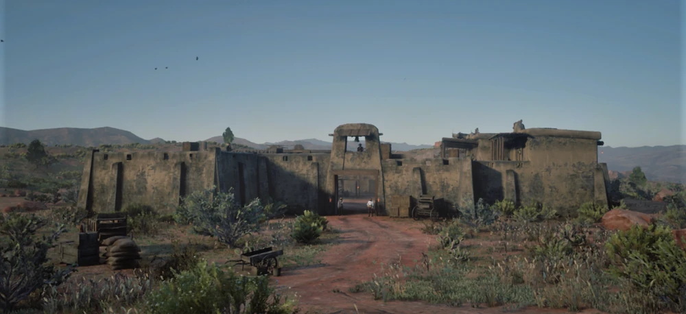
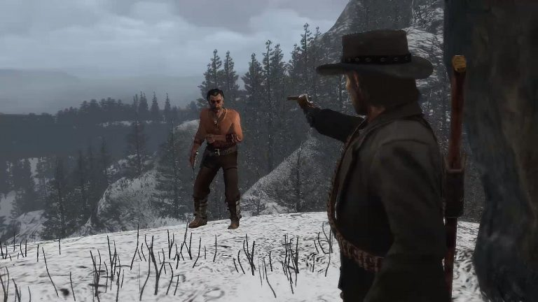
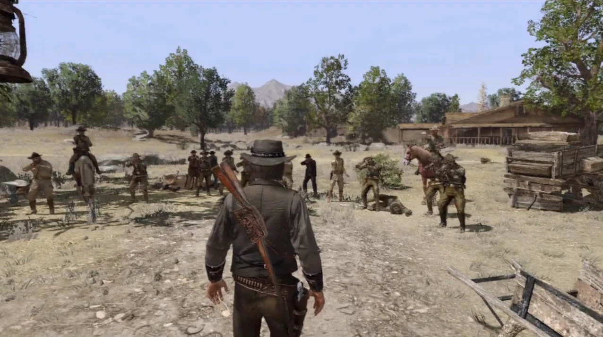
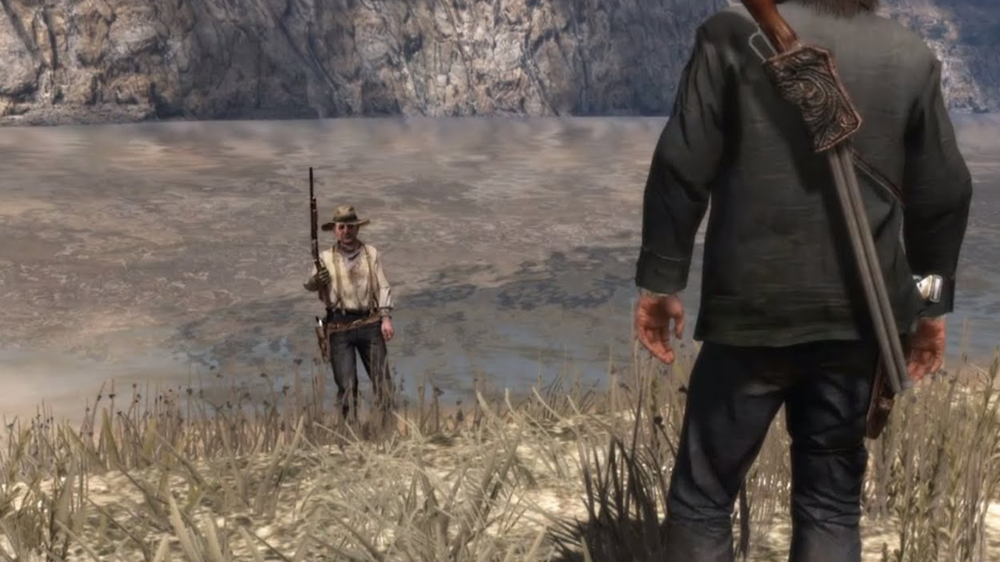

História
Red Dead Redemption conta a história de John Marston, um ex-fora-da-lei que tenta deixar para trás uma vida de crimes para viver honestamente com sua esposa Abigail e seu filho Jack. A história se passa em 1911, quando o Velho Oeste está chegando ao fim e o governo busca extinguir os últimos vestígios da era dos bandidos.
John parte em busca de Bill Williamson, seu ex-aliado e agora líder de uma nova quadrilha violenta. Ao tentar confrontá-lo em Fort Mercer, John é baleado e deixado para morrer. Ele é salvo por Bonnie MacFarlane, que cuida dele até sua recuperação. John começa então a reunir aliados, como o xerife Leigh Johnson, o charlatão Nigel West Dickens, o trapaceiro Seth Briars e o contrabandista Irish, para montar um ataque ao forte. Mesmo conquistando Fort Mercer, Bill foge para o México.

Determinado a continuar sua missão, John atravessa a fronteira e chega ao México, um país dividido pela revolução. Lá, ele é manipulado tanto pelo coronel Allende quanto pelo rebelde Abraham Reyes, que prometem ajudá-lo apenas para usá-lo na guerra. Depois de batalhas intensas e traições, John encontra Bill Williamson, que é morto ao resistir. Em seguida, ele confronta Javier Escuella, outro ex-companheiro de gangue, que também é capturado ou morto.
Ao voltar aos agentes federais, John descobre que ainda não está livre. Ele deve enfrentar Dutch van der Linde, antigo líder da gangue e figura paterna em sua vida. Dutch agora lidera um grupo de nativos americanos e está cada vez mais instável. John participa de confrontos brutais e vê como o avanço da modernização está apagando as últimas resistências do Velho Oeste.
Quando finalmente alcança Dutch, John o encurrala em um penhasco. Sem saída, Dutch admite que sabe que o tempo deles acabou e diz a John que o governo nunca deixará “pessoas como eles” encontrarem paz. Em seguida, ele se joga do precipício, tirando a própria vida. John acredita ter concluído sua missão e retorna à fazenda para reencontrar sua família.
De volta ao lar, John passa dias trabalhando na terra, cuidando de Abigail e Jack e finalmente vivendo a paz que sempre desejou. Mas essa tranquilidade dura pouco. Mesmo após cumprir tudo o que o governo pediu, os federais retornam com uma força militar enorme para eliminá-lo definitivamente.
Em um ataque brutal, o exército cerca a fazenda. John percebe que não tem chance de sobreviver, então leva Abigail e Jack para o celeiro e os manda fugir. Em seu último ato de sacrifício, John enfrenta dezenas de soldados sozinho e é morto, garantindo a fuga de sua família.
Anos depois, Jack já crescido rastreia Edgar Ross, o homem responsável pela destruição de sua família. Ele o encontra aposentado, pescando tranquilamente. Jack o confronta e os dois travam um duelo. Jack vence e mata Ross, encerrando a história da família Marston.
Curiosidades
- O jogo quase teve um terceiro mapa que foi cortado por limitações de hardware.
- John Marston teve 3 dubladores diferentes antes do modelo final.
- O México do jogo foi inspirado em várias regiões reais como Sonora e Chihuahua.
- RDR1 foi dublado sem captura facial completa, resultando em animações limitadas.
- Jack Marston sempre foi planejado para ser o protagonista final.